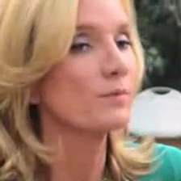

Supplementary Materials for
Vclip:
Face-based Speaker Generation by Face-voice Association Learning
Authors
- SHI, Yao (OPPO) ······ shiyao1@oppo.com
- XU, Yunfei (OPPO)
- SUO, Hongbin (OPPO)
- WAN, Yulong (OPPO)
- LIU, Haifeng (University of Science and Technology of China)
Demo 1: Face-based Speaker Generation
We use voxceleb1 face images provided in this link throughout our synthesis demos. To demonstrate the capacity of the proposed generate-and-retrive strategy to face-based speaker generation. We synthesize sample speech for the top-1 generated speaker for each face image below.
Left click on the images to play generated samples!
Demo 2: Generating Multiple Probable Candidates
We cast face-base speech synthesis as a conditional speaker generation task aiming to produce probable candidate synthesis voices for reference faces. Mutliple equally-probable candidate voices may be proposed in our retrival stage. Here we demonstrate synthetic speech from top-5 retrival result given a single reference face. We note the voices in each group sound different but shares common speaker attributes and are all probable matches
| Reference Face | Top-5 generated | ||||
Demo 3: Retriving Existing Speech with Vclip
We construct a gallery of audio-visual data from 500 unseen speakers (in validation dataset) from Voxceleb2. Each speaker contributes 10 random face-voice pairs to this gallery, resulting in total of 5000 samples. We then perform top-5 Face-to-Voice retrival for this demo. Note that although the exact voice behind the photo nearly always fails to present on the top-5 list (We measured a retrival mAP of 8.62 on this gallery). The retrived voice convey meaningful information about the query face image, as attributes such as language, dialect, ethnicity are consistent with the query image and across retival results. We believe this result demostrate that our vclip model captures rich variations across these factors, and only those coincides with LibriTTS are successfully transfered. This begs the question of the viability of incoporating Vclip into more expressive approaches to TTS such as BARK.
| Query Face | Top-5 Retrived | ||||
 |
|||||
|  | |||||